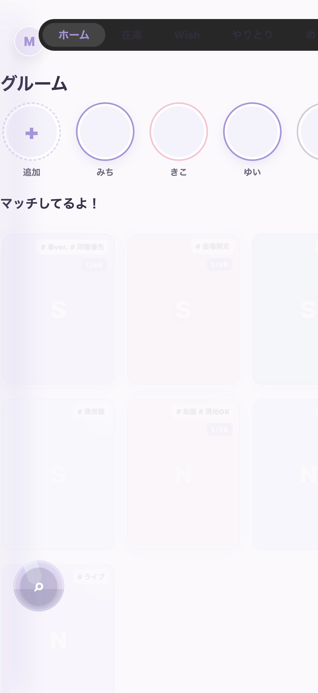
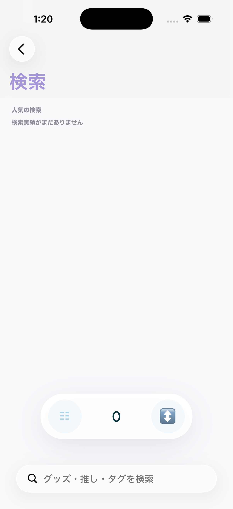
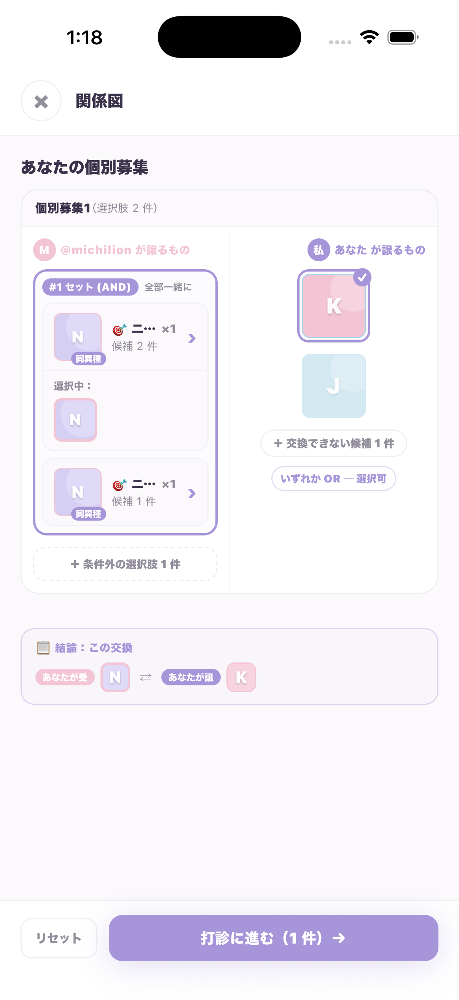
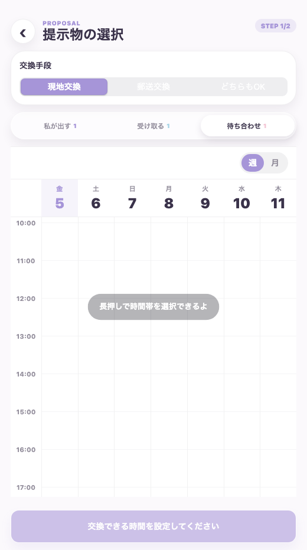
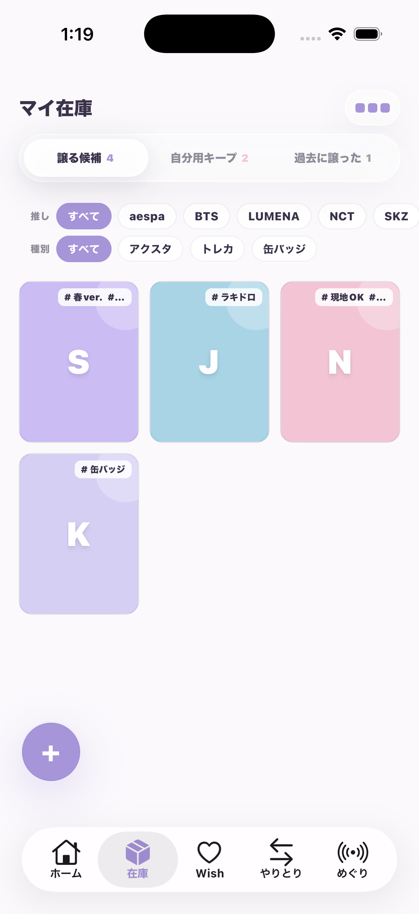
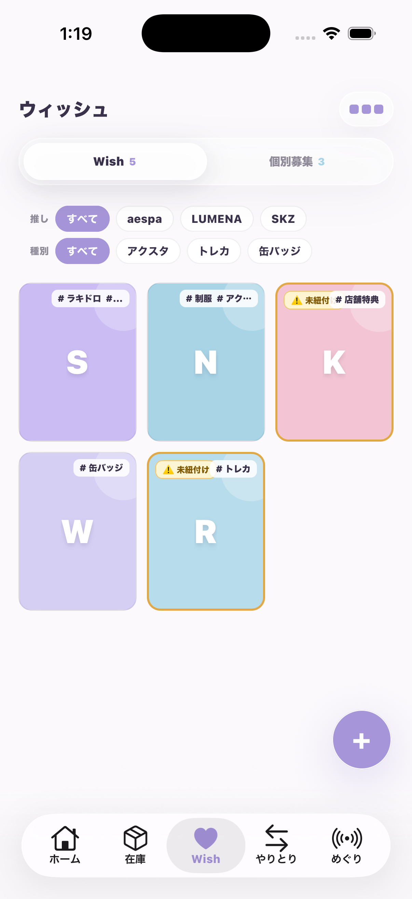
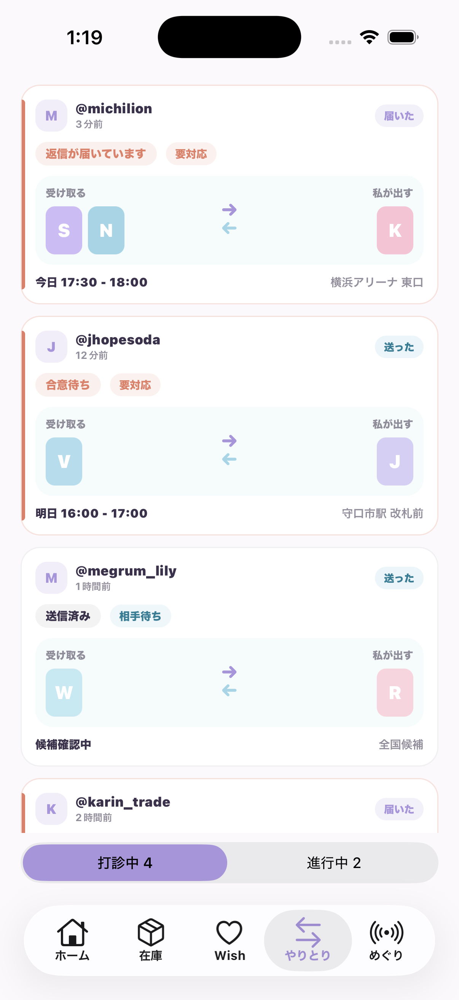
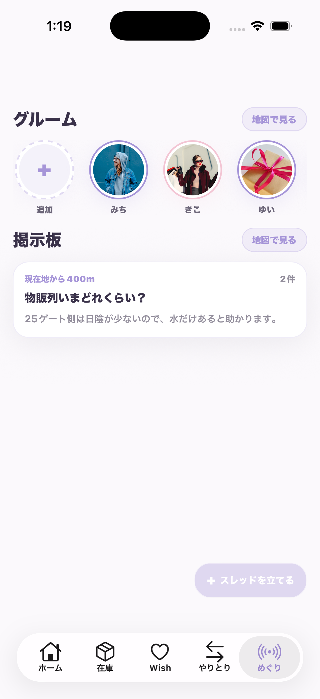

ホーム
Home
上にグルーム、中央に「マッチしてるよ！」と「交換できるかも？」のカード群が並ぶ画面。
RN元
mobile/app/(tabs)/index.tsx
Swift先
ios-native/Sources/MegrumApp/HomeScreen.swift
これは mock HTML ではなく、`mobile/` の Preview 実画面をシミュレータで撮った一覧です。 画面の見た目から `RN元` と `Swift先` をすぐ引けるようにしてあります。
まず見た目で逆引きしたい時はここから探す。

上にグルーム、中央に「マッチしてるよ！」と「交換できるかも？」のカード群が並ぶ画面。
RN元
mobile/app/(tabs)/index.tsx
Swift先
ios-native/Sources/MegrumApp/HomeScreen.swift

左上に戻る、下に検索バー、中央に件数とフィルター導線がある検索画面。
RN元
mobile/app/search.tsx
Swift先
ios-native/Sources/MegrumApp/SearchScreen.swift

タイトルが「関係図」。左右の候補パネルと、下部の「打診に進む」が目印。
RN元
mobile/app/match-detail.tsx
Swift先
ios-native/Sources/MegrumApp/MatchRelationScreen.swift

`PROPOSAL / STEP 1/2`、交換手段タブ、`私が出す / 受け取る / 待ち合わせ` の切替がある。
RN元
mobile/app/proposal-select.tsx
Swift先
ios-native/Sources/MegrumApp/ProposalCreateFlow.swift

タイトル「マイ在庫」。`譲る候補 / 自分用キープ / 過去に譲った` の切替とグッズグリッド。
RN元
mobile/app/(tabs)/inventory.tsx
Swift先
ios-native/Sources/MegrumApp/CollectionScreens.swift

タイトル「ウィッシュ」。`Wish / 個別募集` 切替と、募集デッキが見える画面。
RN元
mobile/app/(tabs)/wishes.tsx
Swift先
ios-native/Sources/MegrumApp/CollectionScreens.swift

相手ごとのカードが縦に並び、下で `打診中 / 進行中` を切り替える一覧画面。
RN元
mobile/app/(tabs)/transactions.tsx
Swift先
ios-native/Sources/MegrumApp/TradesScreen.swift

`グルーム` と `掲示板` の2セクションがあり、それぞれに `地図で見る` が付く入口画面。
RN元
mobile/app/(tabs)/encounters.tsx
Swift先
ios-native/Sources/MegrumApp/MeguriScreen.swift
`mobile/app` の全68ルートをカテゴリ別にまとめた。スクショ未収録でも `RN元` と `Swift先` はここで引ける。
Welcome / 認証入口
ロゴ、ログイン、新規登録、プレビュー導線の入口。
RN元
mobile/app/(auth)/welcome.tsx
Swift先
ios-native/Sources/MegrumApp/AuthScreen.swift
ログイン
メールアドレスとパスワードでログイン。
RN元
mobile/app/(auth)/login.tsxSwift先
ios-native/Sources/MegrumApp/AuthScreen.swift新規登録
メール登録、規約同意後の新規作成。
RN元
mobile/app/(auth)/signup.tsxSwift先
ios-native/Sources/MegrumApp/AuthScreen.swift認証メール待ち
メール認証誘導と確認待ち。
RN元
mobile/app/(auth)/verify-email.tsxSwift先
ios-native/Sources/MegrumApp/AuthScreen.swiftパスワード再設定
認証フロー配下のパスワードリセット導線。
RN元
mobile/app/(auth)/password-reset.tsxSwift先
ios-native/Sources/MegrumApp/AuthScreen.swiftパスワード再設定（別導線）
トップ階層にあるパスワードリセット導線。
RN元
mobile/app/password-reset.tsxSwift先
ios-native/Sources/MegrumApp/AuthScreen.swiftメール認証完了
認証済みを知らせる完了画面。
RN元
mobile/app/auth/email-confirmed.tsxSwift先
ios-native/Sources/MegrumApp/AuthScreen.swiftパスワードリセット完了
パスワード更新後の完了導線。
RN元
mobile/app/auth/password-reset-confirm.tsxSwift先
ios-native/Sources/MegrumApp/AuthScreen.swiftオンボーディング: 性別
初回アカウント設定の開始。
RN元
mobile/app/onboarding/gender.tsxSwift先
ios-native/Sources/MegrumApp/AccountSetupScreen.swiftオンボーディング: 推し選択
推しグループ/作品の選択。
RN元
mobile/app/onboarding/oshi.tsxSwift先
ios-native/Sources/MegrumApp/OnboardingOshiSelection.swiftオンボーディング: メンバー選択
推しメンバー/キャラの選択。
RN元
mobile/app/onboarding/members.tsxSwift先
ios-native/Sources/MegrumApp/OnboardingOshiSelection.swiftオンボーディング: エリア
拠点エリア設定。
RN元
mobile/app/onboarding/area.tsxSwift先
ios-native/Sources/MegrumApp/AccountSetupScreen.swiftオンボーディング完了
初回設定完了導線。
RN元
mobile/app/onboarding/done.tsxSwift先
ios-native/Sources/MegrumApp/AccountSetupScreen.swiftホーム
グルーム、マッチ候補、交換候補が並ぶメイン画面。
RN元
mobile/app/(tabs)/index.tsxSwift先
ios-native/Sources/MegrumApp/HomeScreen.swift検索
検索バー、フィルター、検索結果一覧。
RN元
mobile/app/search.tsxSwift先
ios-native/Sources/MegrumApp/SearchScreen.swift関係図
個別募集や候補の関係を見て打診へ進む画面。
RN元
mobile/app/match-detail.tsxSwift先
ios-native/Sources/MegrumApp/MatchRelationScreen.swift相手プロフィール
相手の譲る候補・個別募集・評価の入口。
RN元
mobile/app/user-profile.tsxSwift先
ios-native/Sources/MegrumApp/PublicUserProfileScreen.swift相手の評価一覧
相手プロフィールから開く評価一覧。
RN元
mobile/app/user-evaluations.tsxSwift先
ios-native/Sources/MegrumApp/PublicUserProfileScreen.swiftプレビュー詳細
相手詳細系の派生導線。
RN元
mobile/app/preview-detail.tsxSwift先
ios-native/Sources/MegrumApp/PublicUserProfileScreen.swift在庫
譲る候補、自分用キープ、過去に譲った在庫を切り替える。
RN元
mobile/app/(tabs)/inventory.tsxSwift先
ios-native/Sources/MegrumApp/CollectionScreens.swiftウィッシュ
Wish と個別募集の管理。
RN元
mobile/app/(tabs)/wishes.tsxSwift先
ios-native/Sources/MegrumApp/CollectionScreens.swiftグッズ編集
在庫追加・編集。
RN元
mobile/app/goods-editor.tsxSwift先
ios-native/Sources/MegrumApp/GoodsEditorScreen.swift個別募集編集
譲る/求める条件を組む個別募集編集。
RN元
mobile/app/listing-editor.tsxSwift先
ios-native/Sources/MegrumApp/IndividualListingsScreen.swift自分在庫ビュー
コレクション文脈の自分向けビュー。
RN元
mobile/app/me.tsxSwift先
ios-native/Sources/MegrumApp/CollectionScreens.swift打診作成 STEP1
交換手段、提示物、待ち合わせ候補を組む。
RN元
mobile/app/proposal-select.tsxSwift先
ios-native/Sources/MegrumApp/ProposalCreateFlow.swift打診作成 STEP2
送信内容確認と送信。
RN元
mobile/app/proposal-confirm.tsxSwift先
ios-native/Sources/MegrumApp/ProposalCreateFlow.swiftスケジュール編集
待ち合わせ候補の編集導線。
RN元
mobile/app/schedule-editor.tsxSwift先
ios-native/Sources/MegrumApp/ProposalCreateFlow.swiftスケジュール候補一覧
候補比較の派生画面。
RN元
mobile/app/schedules.tsxSwift先
ios-native/Sources/MegrumApp/ProposalCreateFlow.swiftやりとり一覧
打診中/進行中の取引カード一覧。
RN元
mobile/app/(tabs)/transactions.tsxSwift先
ios-native/Sources/MegrumApp/TradesScreen.swift取引詳細
やりとり個別詳細。
RN元
mobile/app/transaction-detail.tsxSwift先
ios-native/Sources/MegrumApp/TradesScreen.swift取引日程
取引日程と待ち合わせ情報。
RN元
mobile/app/transaction-schedule.tsxSwift先
ios-native/Sources/MegrumApp/TradesScreen.swift証跡撮影
取引証跡写真の撮影・共有。
RN元
mobile/app/transaction-capture.tsxSwift先
ios-native/Sources/MegrumApp/TradesScreen.swift取引承認
証跡確認と承認。
RN元
mobile/app/transaction-approve.tsxSwift先
ios-native/Sources/MegrumApp/TradesScreen.swift取引評価
完了後の評価入力。
RN元
mobile/app/transaction-rate.tsxSwift先
ios-native/Sources/MegrumApp/TradesScreen.swift取引キャンセル/遅刻
遅刻やキャンセルの導線。
RN元
mobile/app/transaction-cancel-or-late.tsxSwift先
ios-native/Sources/MegrumApp/TradesScreen.swift異議申し立て作成
dispute 起票の導線。
RN元
mobile/app/dispute-new.tsxSwift先
ios-native/Sources/MegrumApp/DisputeDetailScreen.swift異議申し立て詳細
dispute の詳細確認。
RN元
mobile/app/dispute-detail.tsxSwift先
ios-native/Sources/MegrumApp/DisputeDetailScreen.swiftめぐり入口
グルームと掲示板の入口。
RN元
mobile/app/(tabs)/encounters.tsxSwift先
ios-native/Sources/MegrumApp/MeguriScreen.swiftめぐりマップ
めぐり地図導線。
RN元
mobile/app/meguri-map.tsxSwift先
ios-native/Sources/MegrumApp/MeguriScreen.swiftグルームマップ
グルームの地図表示。
RN元
mobile/app/groom-map.tsxSwift先
ios-native/Sources/MegrumApp/MeguriScreen.swift掲示板一覧
めぐり掲示板のスレッド一覧。
RN元
mobile/app/meguri-board.tsxSwift先
ios-native/Sources/MegrumApp/MeguriScreen.swift掲示板スレッド詳細
スレッド本文と返信詳細。
RN元
mobile/app/meguri-board-thread.tsxSwift先
ios-native/Sources/MegrumApp/MeguriScreen.swift掲示板マップ
掲示板の地図表示。
RN元
mobile/app/meguri-board-map.tsxSwift先
ios-native/Sources/MegrumApp/MeguriScreen.swiftめぐりプロフィール
めぐり用の公開プロフィール。
RN元
mobile/app/meguri-profile.tsxSwift先
ios-native/Sources/MegrumApp/MeguriScreen.swiftめぐりプロフィール編集
めぐりプロフィールの編集。Swift側は未分離寄り。
RN元
mobile/app/meguri-profile-edit.tsxSwift先
ios-native/Sources/MegrumApp/MeguriScreen.swiftめぐりアバター編集
動物アバターや見た目の編集。
RN元
mobile/app/meguri-avatar-edit.tsxSwift先
ios-native/Sources/MegrumApp/MeguriScreen.swiftめぐり共有
共有導線。
RN元
mobile/app/meguri-share.tsxSwift先
ios-native/Sources/MegrumApp/MeguriScreen.swiftめぐりメッセージ
めぐりのメッセージスレッド。
RN元
mobile/app/meguri-letters.tsxSwift先
ios-native/Sources/MegrumApp/SettingsScreen.swiftめぐり広場
めぐり広場系の導線。
RN元
mobile/app/meguri-plaza.tsxSwift先
ios-native/Sources/MegrumApp/MeguriScreen.swiftめぐり導入
めぐりの紹介導線。
RN元
mobile/app/meguri-intro.tsxSwift先
ios-native/Sources/MegrumApp/MeguriScreen.swiftめぐり実績
実績確認の導線。Swift側の独立実装状況は要確認。
RN元
mobile/app/meguri-achievements.tsxSwift先
ios-native/Sources/MegrumApp/MeguriScreen.swiftめぐりプラス
有料導線。Swift側は独立画面未分離の可能性あり。
RN元
mobile/app/meguri-plus.tsxSwift先
ios-native/Sources/MegrumApp/MeguriScreen.swift自分プロフィール
自分のプロフィールと設定導線。
RN元
mobile/app/(tabs)/profile.tsxSwift先
ios-native/Sources/MegrumApp/OwnProfileScreen.swiftプロフィール編集
プロフィール編集モード。
RN元
mobile/app/profile-edit.tsxSwift先
ios-native/Sources/MegrumApp/AccountSetupScreen.swift推し設定
推しの追加・編集設定。
RN元
mobile/app/oshi-settings.tsxSwift先
ios-native/Sources/MegrumApp/OshiSettingsScreen.swift住所設定
郵送交換向けの住所設定。
RN元
mobile/app/address-settings.tsxSwift先
ios-native/Sources/MegrumApp/SettingsScreen.swiftブロックユーザー
ブロック一覧管理。
RN元
mobile/app/blocked-users.tsxSwift先
ios-native/Sources/MegrumApp/SettingsScreen.swift通知設定
通知の許可や振る舞い設定。
RN元
mobile/app/notification-settings.tsxSwift先
ios-native/Sources/MegrumApp/SettingsScreen.swiftプライバシー設定
公開範囲やプライバシー設定。
RN元
mobile/app/settings-privacy.tsxSwift先
ios-native/Sources/MegrumApp/SettingsScreen.swiftヘルプ
ヘルプ・FAQ導線。
RN元
mobile/app/help.tsxSwift先
ios-native/Sources/MegrumApp/SettingsScreen.swift利用規約
法務文書: 利用規約。
RN元
mobile/app/legal/terms.tsxSwift先
ios-native/Sources/MegrumApp/SettingsScreen.swiftプライバシーポリシー
法務文書: プライバシーポリシー。
RN元
mobile/app/legal/privacy.tsxSwift先
ios-native/Sources/MegrumApp/SettingsScreen.swift特商法表示
法務文書: 特定商取引法に基づく表記。
RN元
mobile/app/legal/notice.tsxSwift先
ios-native/Sources/MegrumApp/SettingsScreen.swift通知タブ
通知一覧タブ。
RN元
mobile/app/(tabs)/notifications.tsxSwift先
ios-native/Sources/MegrumApp/NotificationsScreen.swift通知一覧の派生導線
通知一覧を別導線から開く画面。
RN元
mobile/app/notifications.tsxSwift先
ios-native/Sources/MegrumApp/NotificationsScreen.swiftルートレイアウト
AuthProvider、通知初期化、Stack全体の土台。
RN元
mobile/app/_layout.tsxSwift先
アプリ全体のルート構成に相当認証レイアウト
認証フローのリダイレクト制御。
RN元
mobile/app/(auth)/_layout.tsxSwift先
AuthScreen / 認証ルーティング全体に相当タブレイアウト
ホーム/在庫/Wish/やりとり/めぐりのタブ構成。
RN元
mobile/app/(tabs)/_layout.tsxSwift先
タブ構成とドロワー全体に相当